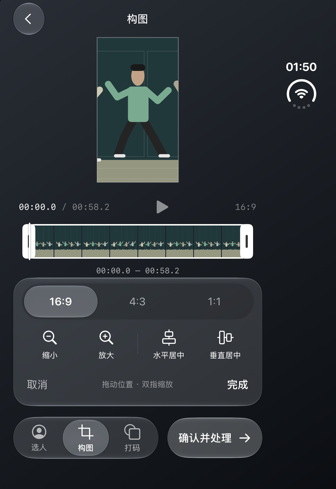
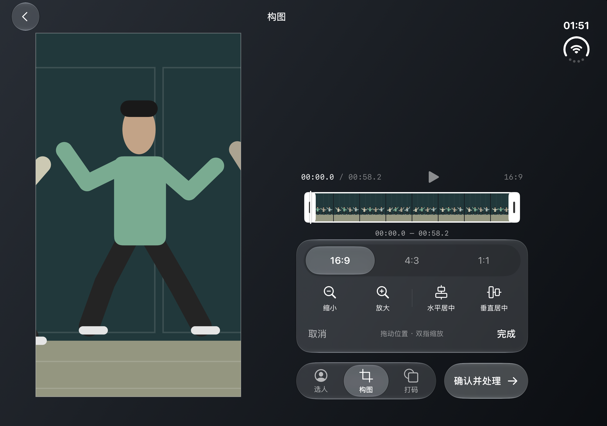
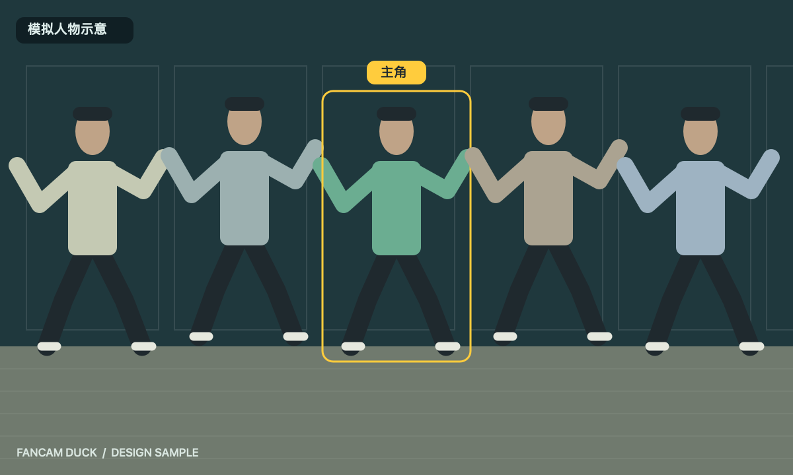

同一个项目，适应不同屏幕。
Duo 收起后保留单页编辑，展开后视频与控制区并排。主角、构图和时间范围随显示区域变化保持。
Mac Catalyst 支持文件导入、鼠标选人、可缩放窗口、空格播放、⌘O 导入和 ⌘S 保存成片。

Duo · 收起
Duo · 展开构图
Mac · 模拟人物构图示意已在设备管理器切换关闭、半展开、展开状态并检查构图连续性。Mac 上从桌面导入完整 37.92 秒原视频，完成跟踪、1080×1920 导出并通过原生保存面板保存，保留 AAC 原音。Mac 图为模拟人物构图示意。
验证记录 · Mac 成片信息